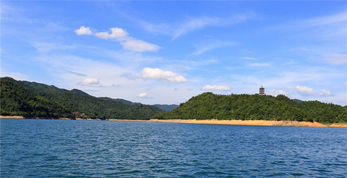
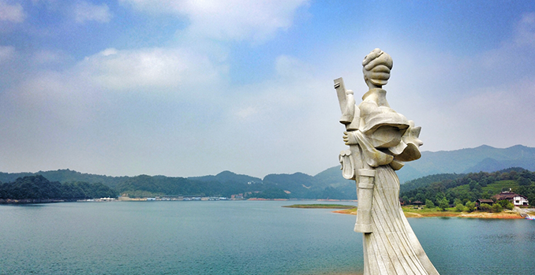

景区介绍
酒仙湖景区位于湖南省攸县东北部，是酒埠江旅游区的第一大景区。她包括酒仙湖、攸女仙境、宝宁寺、地质博物馆、大坝、官田古镇、水上乐园等景点，为国家级水利风景区。其中酒仙湖为国家大Ⅱ型水库，总蓄水量3亿立方米，蓄水面积11.2平方公里。湖边群山绵延，树木繁茂；湖区沟叉幽长，空气清新；湖水晶莹透彻，波光涟漪；湖内水产丰富，鱼类繁多。
攸女仙境是以“攸女文化”串联起来的一座主题性岛屿，在岛上既可探寻古老的湘东民俗风情，观赏酿酒、制茶、磨豆腐等民间技艺，又可漫步于水榭楼台之间，感受山的静谧水的温润，还可舒展全身筋骨登双子塔，爬攸女寨一览酒仙湖曼妙的风光。
宝宁寺座落在酒仙湖上游宝宁村，开创于唐天宝10年即公元751年，是湖南开创最早的佛教禅院之一，为佛教禅宗曹洞宗的祖庭，寺内殿堂楼阁林立，享有“北有少林，南有宝宁”以及中国佛教界的“三绝”、“三奇”的美誉。地质博物馆紧邻酒仙湖景区入口，展馆面积3200多平方米，以图片、文字、实物标本、，模拟场景、影视介绍、多媒体演示等方法，展示酒埠江地质公园地质地貌特点和形成过程，融知识性、娱乐性于一体，是“国内一流、与国际接轨”的新型博物馆。
景区特色
★酒仙湖风景区是国家AAA级景区、国家水利风景区、国家湿地公园和国家地质公园、省级森林公 园、省级风景名胜区。
★酒仙湖四周群山巍巍、层峦叠嶂、林木葱茏、四季竞翠。保持着近乎原始的生态环境，动植物资源丰富，空气清新，碧水蓝天，皓月银波，置身其中顿觉远离尘嚣。
★酒仙湖周边还有宝宁寺、皮佳洞、仙人桥，白龙洞等景点，组成了以溶洞、地下河、天坑、峡谷、天生桥、瀑布、湖泊、古生物化石等地质遗迹景观为主体，辅以丰富的生态景观和人文景观，集科学价值和美学价值于一体的大型综合性地质公园 。
★酒仙湖风光旖旎，山水秀丽。在夏日更是成为游客和市民的避暑胜地。湖南第一的地址博物馆则是一处不可多得的岩溶科研、教学和科普基地。游客置身风景区中，顿觉远离尘嚣，心旷神怡，让人有当年苏子遗世、辱宠皆忘，逍遥而居之感。
交通指引
1、长沙汽车南站、长沙汽车西站都有开往株洲的巴士。
2、从株洲汽车西站乘坐前往攸县的巴士。
3、乘高铁到株洲高铁南站；
4、在株洲换乘中心换乘观光车辆前往景区。